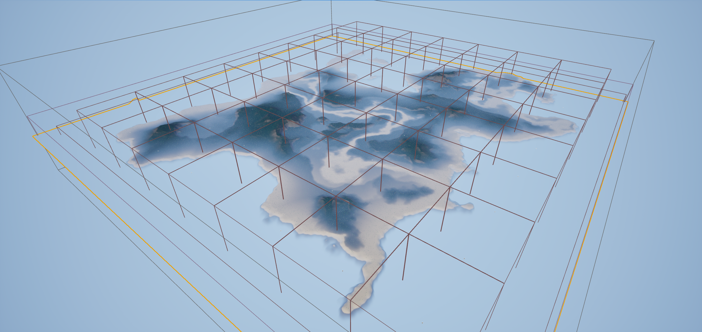

Sprint Development Process
This project was developed over a 10-week period, divided into 4 sprints. Each sprint focused on different aspects of the game development process.
Sprint 1: Project Setup & Core Mechanics Build Up
In the first sprint, I completed the basic story planning and finished most of the Inventory and Harvest features.
Inventory system

Composite system

Harvest system

Sprint 2: Build system & Survival System
In the second sprint, I completed the architectural visualization and changed the materials so that all objects could not block the player's camera.
- 9 type of building visualization

- Player camera setting

- Survival Setting

Sprint 3: Polish build system & Storage System
The third sprint established the level flow and GameTest.

Sprint 4: settle done Game basic setting
build up level and Game play
AI NPC
Procedurally Generated Map
- The instance landscapes on the map are generated using a Procedural Content Generation Framework.
- The map is identified using 64 Zone blueprint actors. If an instance mesh is hit by a player, the Zone blueprint converts the instance mesh into a destructible blueprint. If the player leaves the current Zone blueprint, a random instance mesh is regenerated after 15 seconds. Additionally, AI creatures are generated when the player enters the Zone blueprint.
- 